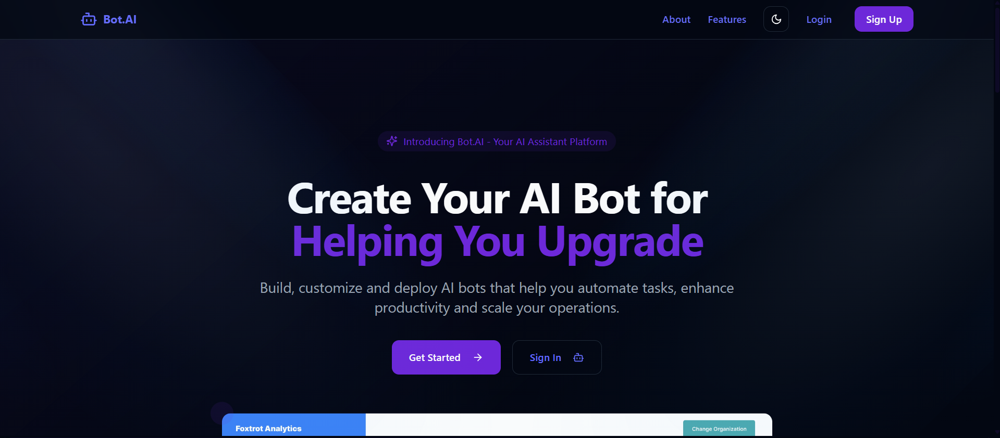

BotAI

BotAI is a sophisticated multi-agent platform that allows users to create, personalize, and manage their own AI bots. Each bot can be assigned specific categories (e.g., Coding Assistant, Creative Writer) and equipped with specialized tools. The architecture supports isolated chat histories for each bot, enabling distinct and context-aware interactions. Built with a FastAPI backend and a robust SQL database for session and bot management, it offers a scalable solution for diverse AI needs.